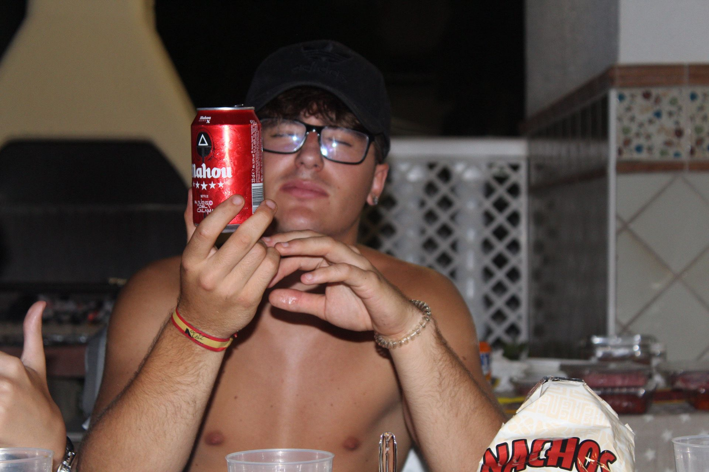
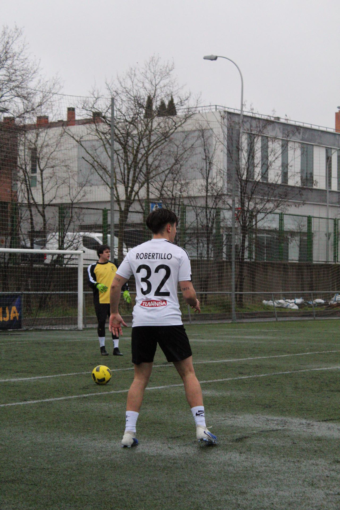
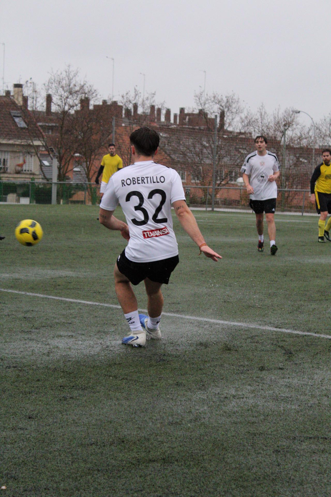
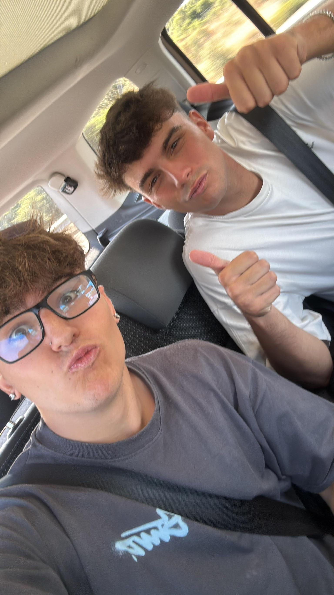
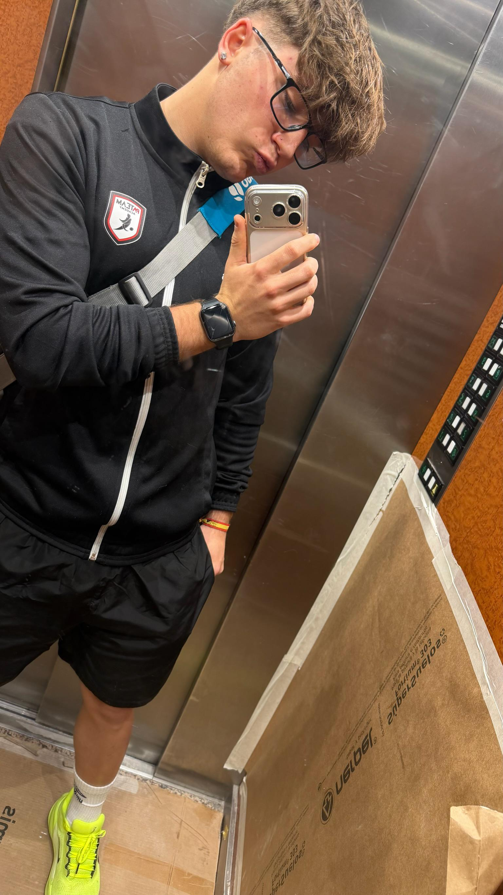
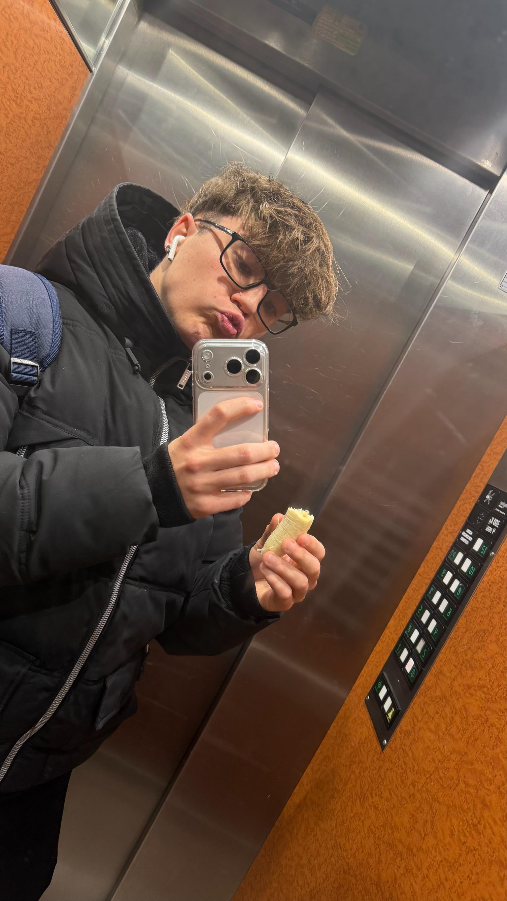
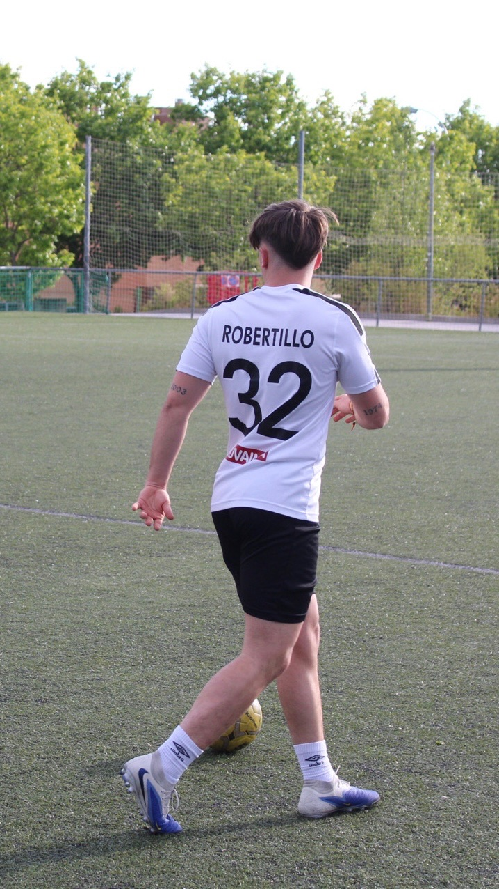
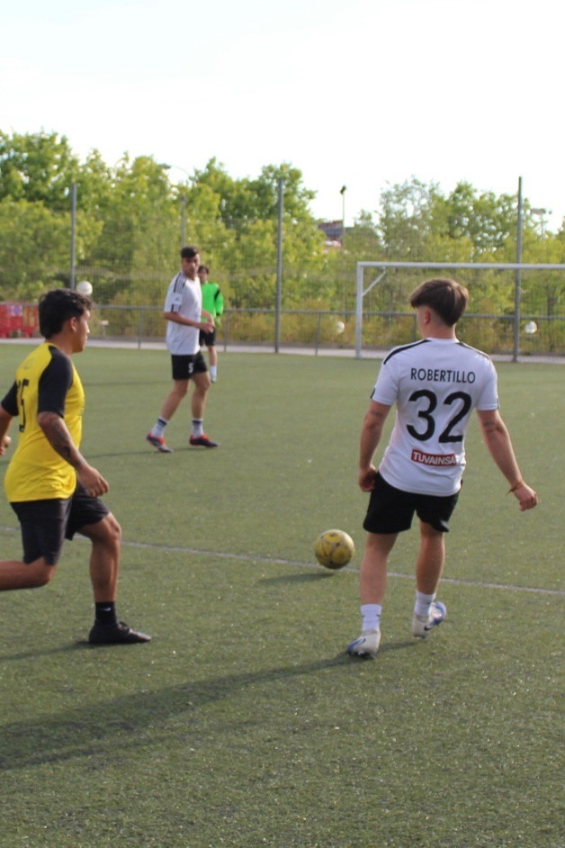
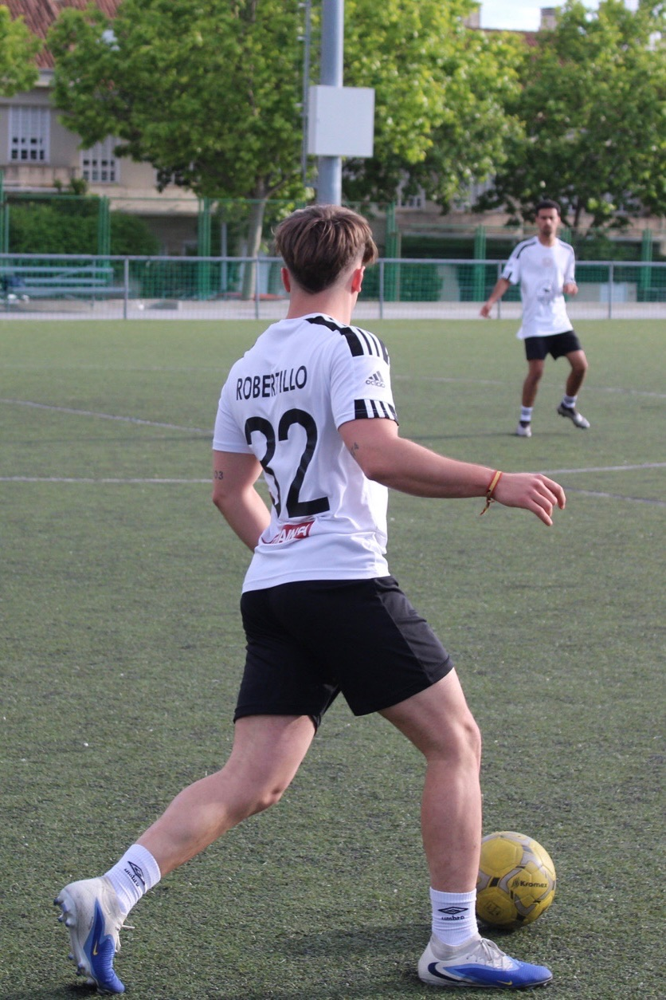
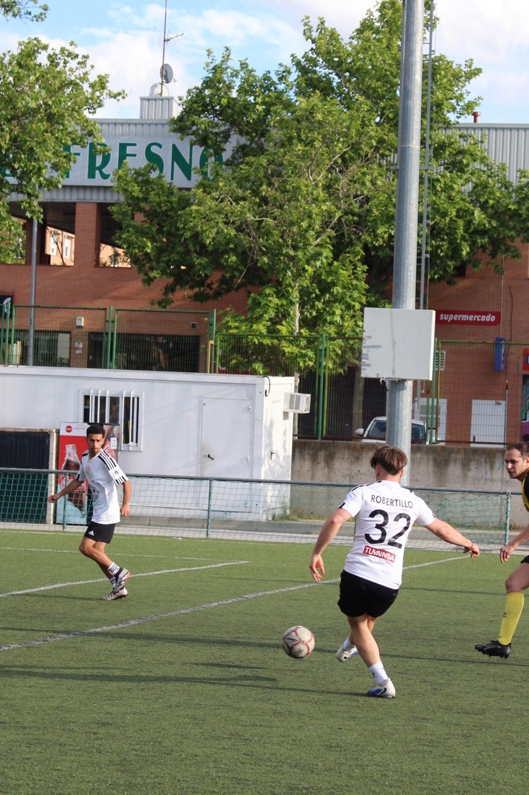

Roberto
Defensa | Dorsal 32
Tillo, el 32 del equipo, es de esos jugadores cuya importancia no siempre salta a la vista, pero se
hace evidente en cuanto falta. Discreto en apariencia, sostiene el equilibrio del juego con una
presencia constante y un criterio que aporta orden al equipo.
A veces se la juega más de la cuenta y puede dejarnos algún susto (de esos que hacen mirar al banquillo con cara seria), pero también tiene en sus botas pases de mucha calidad que compensan con creces. En resumen, un jugador silencioso pero imprescindible: no siempre brilla, pero cuando no está… hasta el rival lo echa de menos.
A veces se la juega más de la cuenta y puede dejarnos algún susto (de esos que hacen mirar al banquillo con cara seria), pero también tiene en sus botas pases de mucha calidad que compensan con creces. En resumen, un jugador silencioso pero imprescindible: no siempre brilla, pero cuando no está… hasta el rival lo echa de menos.
Galería








